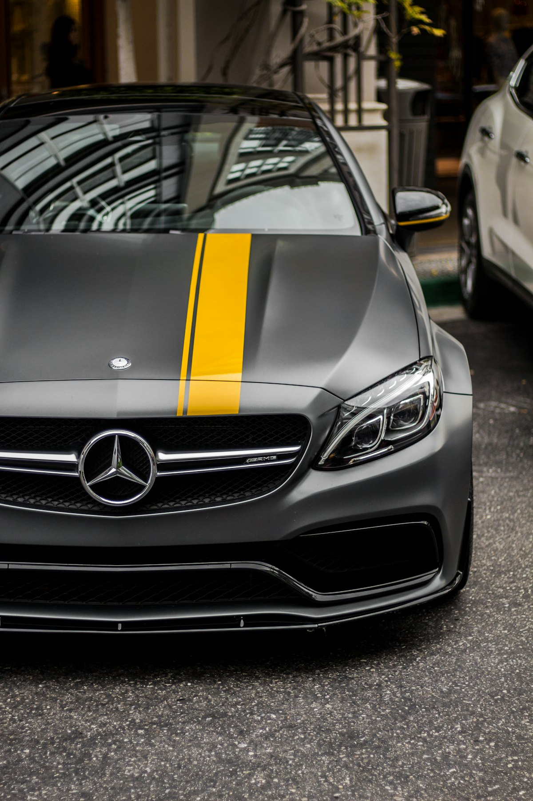

Ключі Mercedes-Benz в Ужгороді — дублікат, програмування

Mercedes-Benz використовує інфрачервоні ключі (IR-ключі) на старіших моделях (W202, W203, W211) та смарт-ключі FBS3 і FBS4 на сучасних (W204, W212, W205, W213, GLE). Маємо обладнання Autel IM608 PRO та CGDI MB — це стандарт для роботи з Mercedes.
Потрібен ключ Mercedes-Benz?
Зателефонуйте — скажемо точну ціну та чи є потрібна заготовка
З якими моделями Mercedes-Benz ми працюємо
- Mercedes W202 / W203 / W204 / W205 / W206 (C-Class)
- Mercedes W210 / W211 / W212 / W213 (E-Class)
- Mercedes W220 / W221 / W222 / W223 (S-Class)
- Mercedes W163 / W164 / W166 / W167 (M / GLE)
- Mercedes W639 / W447 (Vito / V-Class)
- Mercedes Sprinter
- Mercedes GLA / GLC / GLS
Ціни на ключі Mercedes-Benz в Ужгороді
| Послуга | Ціна | Час |
|---|---|---|
| Дублікат IR-ключа (W202, W203, W211) | від 2500 грн | 1 год |
| Дублікат ключа FBS3 (W204, W212, W221) | від 3500 грн | 1–2 год |
| Smart-ключ FBS4 (W205, W213, W222) | від 6000 грн | 2–4 год |
| Програмування при повній втраті FBS3 | від 4500 грн | 2–4 год |
| Програмування при повній втраті FBS4 | від 8000 грн | 3–6 год |
| Ремонт корпусу chrome-key | від 600 грн | 20 хв |
| Заміна батарейки + перевірка | від 200 грн | 10 хв |
* Точна вартість залежить від моделі, року випуску та комплектації. Уточнюйте по телефону.
Чому Seven Keys для Mercedes-Benz?
- Усі покоління Mercedes від W202 до W223
- Підтримка FBS3 (BGA-ключ) і FBS4 (HU64)
- Програматори: CGDI MB, Autel IM608, VVDI MB Tool
- Корпуси chrome / matte / Vito / Sprinter — на складі
- Лезо HU64, HU72 — у наявності
- Робота з US-ключами (Mercedes з американського ринку)
Як замовити ключ Mercedes-Benz
- Зателефонуйте і назвіть модель, рік випуску та VIN (бажано)
- Ми перевіримо наявність заготовки і назвемо точну ціну
- Приїжджайте до майстерні (вул. Фединця 39, Ужгород) або викликайте майстра з обладнанням
- Виготовляємо і програмуємо ключ при вас — у середньому за 1–2 години
- Перевіряємо роботу: запуск, центральний замок, кнопки
Часті запитання про ключі Mercedes-Benz
Скільки коштує ключ для Mercedes W212?
Дублікат FBS3 для W212 — від 3500 грн з програмуванням. При повній втраті — від 4500 грн.
Чи можете зробити ключ для нового Mercedes W213 (FBS4)?
Так. FBS4 — найскладніший протокол. Дублікат — від 6000 грн, при повній втраті — від 8000 грн через довший процес зчитування даних.
Чи робите ключ для Mercedes Sprinter?
Так. Sprinter використовує ключ типу IR / FBS3 залежно від року. Виготовлення — від 2500 грн.
Чи можна зробити ключ для Mercedes без снятія EZS?
На більшості FBS3-моделей (W204, W212) — так, через OBD-діагностику. На FBS4 у деяких випадках потрібен зйом блоку EZS — це безпечна процедура.
Скільки часу займає виготовлення FBS4-ключа?
Зчитування даних з EZS — до 4 годин. Сам ключ записується за 10 хвилин.
Не знайшли свою модель?
Працюємо з усіма Mercedes-Benz — зателефонуйте, підкажемо рішення